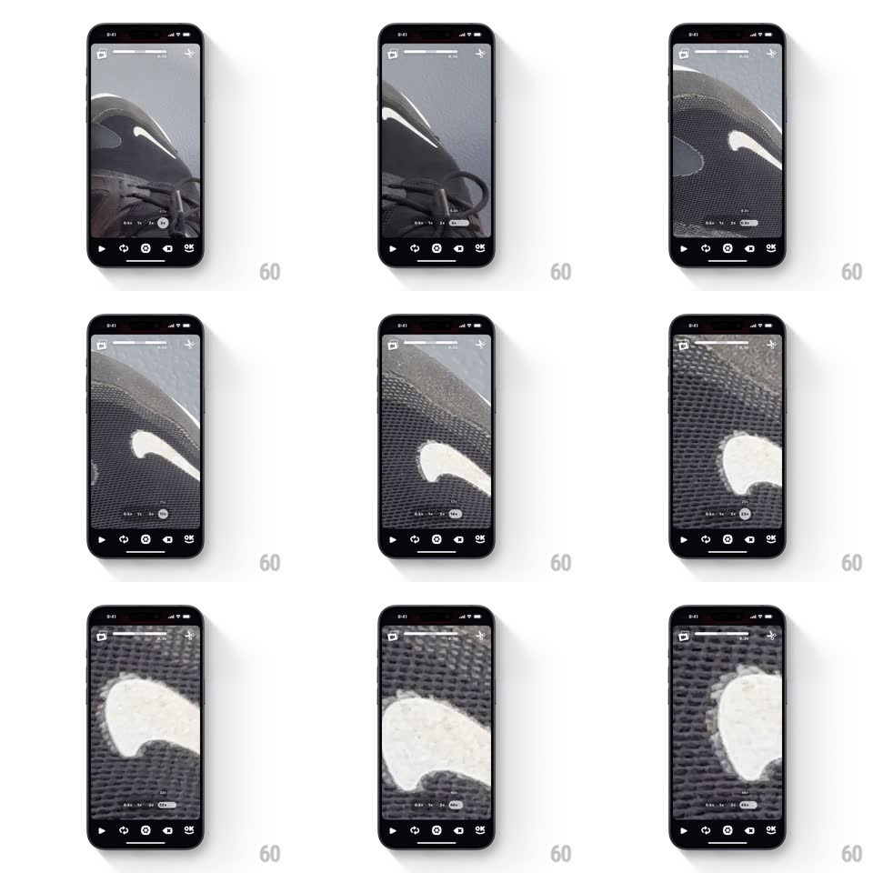

Media
Frame-by-frame

Rebuild this interaction 1:1: OK Video's zoom dial - long-pressing the preset zoom buttons (0.5x, 1x, 2x, 3x) expands them into a horizontal scrubbable dial with a live numeric readout, scrubbing zooms the viewfinder smoothly, and releasing collapses it back.

Rebuild this interaction 1:1: OK Video's zoom dial - long-pressing the preset zoom buttons (0.5x, 1x, 2x, 3x) expands them into a horizontal scrubbable dial with a live numeric readout, scrubbing zooms the viewfinder smoothly, and releasing collapses it back.
## Integration
Integration: stack-agnostic spec - springs given as stiffness/damping, timed motions as duration + curve; map every value to your framework and animation library of choice.
## Scene
Camera viewfinder (close-ups of a shoe as zoom increases). Bottom: a row of circular preset buttons (0.5x, 1x, 2x, 3x). Expanded: a wide horizontal dial strip with tick marks and a live value pill ("10.0").
## Motion spec
Pattern: expanding scrub dial with 1:1 zoom coupling.
- Long-press (or drag from) the preset row: the buttons bloom outward into the full dial strip (spring ~360/20, height growing 44px -> 64px), tick marks fading in along its length.
- The active preset's position becomes the dial's indicator; dragging scrubs the zoom 1:1 with sub-preset precision (0.1x steps), the readout pill tracking the finger with a 40ms lag spring for smoothness.
- Viewfinder zoom applies with slight motion blur compensation - no stepping, no jumps; passing a preset value gives a soft haptic tick and the tick mark brightens.
- Release: the dial collapses back to the preset row (spring ~340/22), the nearest value pill shrinking into its circle; if the value is between presets, a small custom-value pill persists 1.5s then fades.
## Calibration
- Zoom range maps to the full dial width; the scrub is rate-stable regardless of dial pixel width.
- Readout shows one decimal ("2.4") - enough precision to feel pro, not noisy.
## Reduced motion
Dial crossfades in; zoom applies directly.
## Don't miss
- The dial grows OUT of the presets - the same elements transform, preserving the mental model.
- The live viewfinder zoom is the feedback; the readout is secondary confirmation.